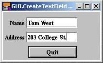

GUI.CreateTextField (x, y, width : int, text : string, actionProc : procedure x (text : string)) : intGUI.CreateTextFieldFull (x, y, width : int, text : string, actionProc : procedure x (text : string), border, fontID, inputKind : int) : int
Creates a text field and returns the text field's widget ID.
A text field is used to create a line of text that can be edited by the user. The user can use the mouse to select part of the text and can enter text into the text field.
If one or more text fields are enabled in a window, then one of the text fields will be active. This means that when any keystrokes are entered into the window, the active text field will receive the keystrokes. The active text field can be changed using the GUI.SetActive procedure.
The x and y parameters specify the lower-left corner of the area in which the text will be drawn. The text field border is just outside the text drawing area. The width parameter specifies the width of the text drawing area. The height of the text field is determined by the height of the font used by the text field. The border of the text field is just outside the text drawing area, so GUI.GetWidth will return values slightly larger than width. The actionProc parameter specifies the name of the procedure to be called when the user presses ENTER (RETURN on a Macintosh) when the text field is active. The parameter is the current text in the text field.
For GUI.CreateTextField, the border around the text field is always a line. For GUI.CreateTextFieldFull, the type of border is specified by the border parameter. The border parameter is one of 0, GUI.LINE, GUI.INDENT, or GUI.EXDENT. A border of 0 is the default and is the same as GUI.LINE. GUI.INDENT and GUI.EXDENT only display properly if the background colour has been set to gray using GUI.SetBackgroundColor. GUI.INDENT makes the text field appear indented or recessed. GUI.EXDENT makes the text field appear to stand out from the window. The fontID parameter specifies the font ID of the font to be used in the text field. The font ID is received from a Font.New call. Do not call Font.Free for this font ID until the label has been disposed of by calling GUI.Dispose. The inputKind parameter specifies the type of input accepted by the text field. This is one of 0, GUI.ANY, GUI.INT, or GUI.REAL. An input type of 0 is the default and is the same as GUI.ANY. GUI.ANY allows any type of input in the text field. GUI.INTEGER only allows positive integer input in the text field. GUI.REAL allows any real number input in the text field. Note that using
GUI.INTEGER or GUI.REAL does not guarantee that the text field string can be converted to an integer or a real. The text could be a null string, and for GUI.REAL could be part of a number such as the string "" or "1.25E" both of which are illegal numbers. (To check the conversion, use the strintok or strrealok functions before calling strint or strreal.)

Two Text Fields
The following program creates a text field and echoes it on the screen when the user presses ENTER.
import GUI
View.Set ("graphics:200;100")
var nameTextField, addressTextField : int % The Text Field IDs.
procedure NameEntered (text : string)
GUI.SetSelection (addressTextField, 0, 0)
GUI.SetActive (addressTextField)
end NameEntered
procedure AddressEntered (text : string)
GUI.SetSelection (nameTextField, 0, 0)
GUI.SetActive (nameTextField)
end AddressEntered
GUI.SetBackgroundColor (gray)
var quitButton := GUI.CreateButton (52, 5, 100, "Quit", GUI.Quit)
nameTextField := GUI.CreateTextFieldFull (50, 70, 100, "",
NameEntered, GUI.INDENT, 0, 0)
addressTextField := GUI.CreateTextFieldFull (50, 40, 100, "",
AddressEntered, GUI.INDENT, 0, 0)
var nameLabel := GUI.CreateLabelFull (45, 70, "Name", 0, 0,
GUI.RIGHT, 0)
var addressLabel := GUI.CreateLabelFull (45, 40, "Address", 0, 0,
GUI.RIGHT, 0)
loop
exit when GUI.ProcessEvent
end loop
GUI.Dispose (quitButton)
colorback (gray)
Text.Locate (maxrow - 1, 1)
put "Name = ", GUI.GetText (nameTextField)
put "Address = ", GUI.GetText (addressTextField) ..
Only one text field is active at a time. The active text field has a blinking cursor (or its selection highlighted). If a keystroke occurs when a window has an active text field in it, the keystroke will be directed to the active text field. You can change which text field is active with the GUI.SetActive procedure or by simply clicking on another text field with the mouse.
When multiple text fields are created in a window, the first text field created is active when the program begins.
The current version of the text field does not support cut and paste or keyboard commands to extend the selection.
Because strings are a maximum of 255 characters, this is the maximum number of characters in a text field.
The TAB character cycles between different text fields in a window. It cycles through the text fields in the order in which they were created. BACK TAB (shift+TAB) cycles through the fields in reverse order.
When GUI.CreateTextField or GUI.CreateTextFieldFull is called, the newly created picture will be displayed immediately unless GUI.DisplayWhenCreated has been called with the display parameter set to false.
When a text field is not enabled, the text field cannot be made active and the text in the field cannot be edited.
The following GUI subprograms can be called with a text box as the widgetID parameter:
GUI.Show, GUI.Hide, GUI.Dispose,GUI.GetX, GUI.GetY, GUI.GetWidth,GUI.GetHeight, GUI.SetPosition,GUI.SetSize, GUI.SetPositionAndSize,GUI.GetText, GUI.SetText, GUI.SetSelection, GUI.SetActive,GUI.SetEchoChar
Exported qualified.
This means that you can only call the function by calling GUI.CreateTextField, not by calling CreateTextField.
GUI.GetText and GUI.SetText for reading and setting the text in the text field. See also GUI.SetEchoChar for setting the character echoed when the user enters acharacter in a text field (often used for entering passwords). See also GUI.SetSelection for setting the selected area of the text. See also GUI.SetActive for making the text field active.